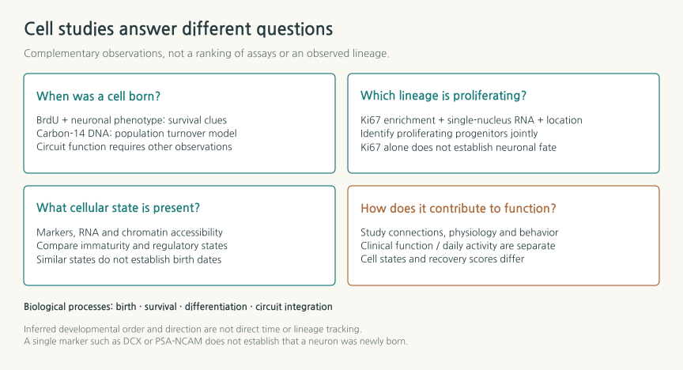
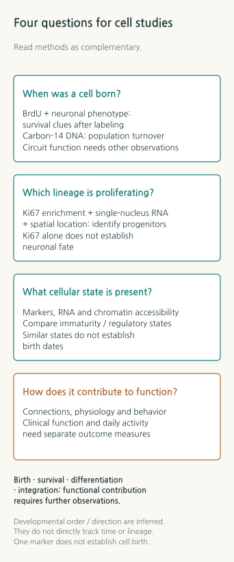
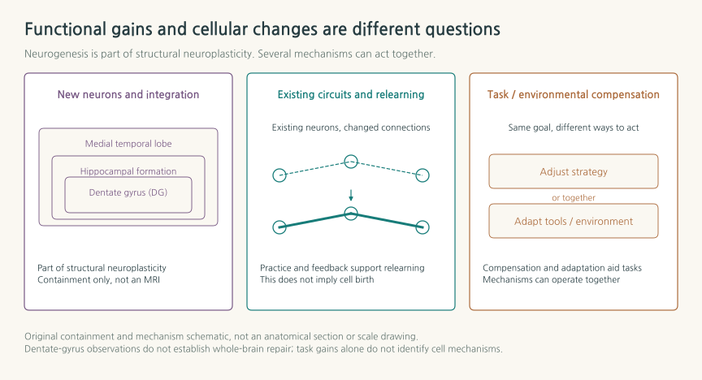
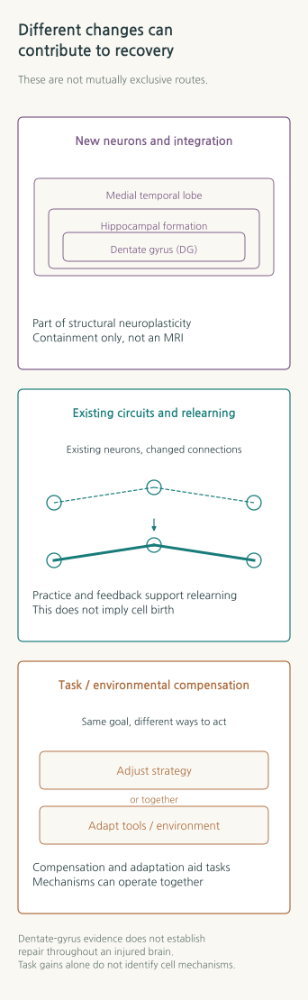
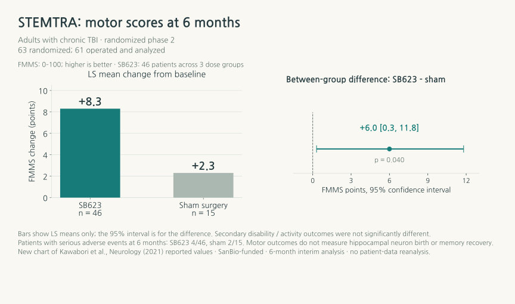
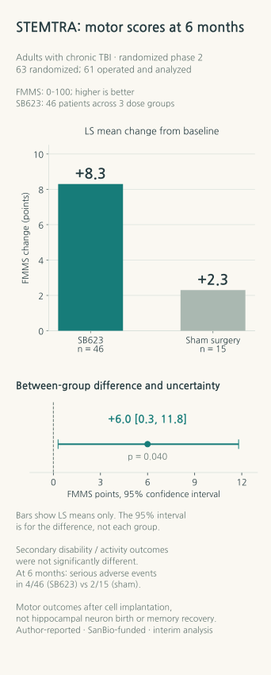

How the Brain Recovers: Adult Neurogenesis and the Science of Rehabilitation
How can newly identified cells in the hippocampus become a possibility for functional recovery? Human brain tissue, rehabilitation trials, and cell therapies reveal different stages of that journey.
RESEARCH REVIEW · OCTOBER 30, 2026 · NEUROBIOLOGY · BRAIN INJURY · REHABILITATION

Contents
- 1. The birthdays of brain cells, recorded by nuclear tests
- 2. An immature cell is not automatically a newly born cell
- 3. What became visible in 2025 and 2026?
- 4. What must a new cell do to become useful?
- 5. Rehabilitation works with the brain that remains
- 6. How far has cell therapy already come?
- 7. Exercise and the promise of “growing brain cells”
- 8. The next advance will connect cell birth with cell use
- References
1. The birthdays of brain cells, recorded by nuclear tests
Atmospheric nuclear tests in the twentieth century left a radioactive carbon signature in the air. Plants absorbed that carbon, and the food chain carried it into human bodies. Decades later, researchers turned this unexpected chronology into a question about the brain: when were its cells born? Carbon incorporated into DNA when a cell divides can be compared with atmospheric concentrations at the time, allowing researchers to estimate the ages of cells living within a tissue. In 2013, Kirsty Spalding and colleagues used this method to report that a fraction of the neuronal population in the adult hippocampus undergoes lifelong turnover. [1]
Reading the birthdays of cells from postmortem tissue is remarkable. Yet the prospect of brain recovery immediately raises harder questions. Did a newly born cell survive? What kind of neuron did it become? Whose signals did it receive, and where did it send its own? What could a person do again because of that change?
Adult neuron formation, recently explored by New Scientist, invites precisely these hopes. Studies of the human hippocampus published in 2025 and 2026 added molecular and histological evidence to a long-running debate about whether the process persists. Assessing its potential now requires following the journey from a cell's birth to a working circuit and, ultimately, a change in everyday life. [2]
The possibility of new neurons forming in the adult hippocampus and the effectiveness of a treatment for restoring function after brain injury are distinct questions that can be studied together. Rehabilitation currently helps people use surviving circuits, learn strategies, and adapt tasks and environments. Regeneration research seeks biological ways to support or supplement those circuits. Understanding both makes the value of a new discovery more concrete.
2. An immature cell is not automatically a newly born cell
Adult neurogenesis is the process through which neural progenitor cells in a mature brain proliferate and their descendants differentiate into neurons, mature, and participate in existing circuits. A particularly well-studied site in humans is the dentate gyrus, a part of the hippocampus involved in learning and memory. Findings from this restricted region cannot be taken to mean that the cerebral cortex can rebuild its motor and language circuits in the same way.
In 1998, Peter Eriksson and colleagues examined the postmortem hippocampi of five adults who had received the labeling compound BrdU for cancer diagnosis during life. They reported cells that carried both a trace of DNA synthesis and neuronal markers. Repeatedly administering birth labels to people for research is difficult, so these rare tissue samples and radiocarbon dating offered different kinds of evidence. BrdU records DNA synthesis during the labeling period; radiocarbon dating examines the DNA ages of isolated cell populations through a model of turnover. [1,3]
The debate returned to what should count as evidence of a new neuron. The protein DCX is often used to identify immature neurons, but a DCX-positive cell cannot simply be assigned a recent adult birthday. Researchers must also consider whether it could have remained immature for a long time. Ki67 marks cells that are proliferating, but identifying their type and determining what they later become requires additional evidence. The number of immature cells observed at one moment reflects the rate of production, the length of time cells remain immature, their survival, and the conditions under which they can be detected.
In 2018, Shawn Sorrells and colleagues reported a steep decline in human hippocampal neurogenesis during infancy and childhood, with young neurons not detected in the adult dentate gyrus. That same year, Maura Boldrini and colleagues reported persistent immature neurons in the dentate gyrus of adults and older people. In 2019, Elena Moreno-Jiménez and colleagues experimentally showed that prolonged tissue fixation can make relevant markers harder to detect. [4,5,6]
Declaring a simple winner in this disagreement would erase the difficulty of studying the human brain. Health and disease before death, the exact tissue sampled, the postmortem interval, fixation, antibody specificity, and the criteria used to classify rare cells can all change what researchers see. Recent work matters because it goes beyond finding a stronger signal for a single marker: it asks whether several methods point to the same cellular identity.
3. What became visible in 2025 and 2026?
Single-nucleus analysis did not initially produce a consistent answer either. A cross-species study by Franjic and colleagues in 2022 found no clear neurogenic trajectory in the human dentate gyrus. Capturing sufficiently rare cells and deciding how to apply markers learned from other species became central challenges for subsequent studies. [7]
In a 2025 Science paper, Ionut Dumitru and colleagues combined single-nucleus RNA analysis, localization within tissue, and machine-learning classification to identify proliferating neural progenitor cells in the adult human hippocampus. Single-nucleus RNA analysis reads the RNA expressed by individual nuclei to infer cell types and states. To find rare progenitors, some samples underwent enrichment using a proliferation marker. [8]
The study analyzed material from six children and nineteen individuals aged 13–78. The combined childhood and adolescent-to-adult datasets contained 402,660 nuclei. Applying a classifier trained on the childhood data to 286,799 adolescent-to-adult nuclei identified 354 candidate neural progenitor cells. Finding a small population within such a large dataset was a major technical challenge. Those 354 candidates cannot, however, be converted into a daily rate of neuron birth. Nor can proportions from differently enriched samples be read as age-specific rates of neurogenesis. The researchers also identified a need to determine how much adult cell division and the slow maturation of cells generated much earlier each contribute. [8]
A 2026 Nature study by Ahmed Disouky and colleagues added measurements of chromatin accessibility to RNA analysis. Chromatin packages DNA with proteins; which regions are accessible provides clues about gene regulation. The researchers compared postmortem hippocampi from young adults, older people with age-appropriate cognition, SuperAgers with exceptional episodic memory, a preclinical pathology group, and people with Alzheimer's disease. The dataset comprised 355,997 nuclei from 38 donors. The number of people available for comparisons and the number of nuclei analyzed within their tissue must be kept separate. [9]
The study identified molecular states corresponding to neural stem cells, neuroblasts, and immature granule cells, with differences in gene regulation across cognitive and pathological groups. These findings provide specific targets for investigating how cellular states relate to healthy aging and disease. A postmortem, cross-sectional comparison cannot establish that SuperAgers' lifestyles increased neurogenesis and thereby preserved memory. [9]
Machine learning extends the microscope's reach in these studies. Researchers cannot manually classify the expression patterns of hundreds of thousands of nuclei, so computational comparisons with known cell states help locate rare candidates. Yet the species and ages used for training, marker genes, and reference datasets influence the result. RNA velocity uses newly transcribed and processed RNA to model the direction of changes in expression. Neither this inference nor a developmental ordering reconstructed from RNA states is a recording of one person's cells followed over time. It is a computational inference about molecular continuity that must be interpreted alongside lineage labeling capable of directly tracking cells and their descendants. [8,9]


Stronger evidence for cell birth and cellular states in Figure 1 makes questions about circuit function more tractable. Beyond identifying clues to birth and maturation, researchers must establish the connections cells make, the information they process, and whether their activity causes a functional change. The limited ability to repeatedly measure these relationships at cellular resolution in a living human brain remains a major obstacle to clinical translation.
4. What must a new cell do to become useful?
Granule cells in the dentate gyrus receive incoming signals and send their output to other hippocampal regions. One function discussed in relation to this system is pattern separation: distinguishing similar experiences. Remembering where a car was parked today without confusing it with yesterday's location suggests why this matters. A score on such a behavioral task cannot, however, be used to work backward to the number of new neurons a person has produced.
Circuit performance depends on more than making additional cells. A cell must reach an appropriate position and survive, receive inputs through its dendrites, and send outputs through its axon to suitable targets. The balance of excitatory and inhibitory inputs, and the timing of activity during learning, also matter. Brain injury can affect cell bodies, axons connecting distant regions, blood vessels, and the surrounding cellular environment. Increasing the supply of cells in one region and restoring a distributed circuit therefore pose different challenges.
Laura Villasana and colleagues illustrated this problem in a controlled cortical impact model of traumatic brain injury in mice. Hippocampal neurons born after injury showed electrical activity and synaptic inputs, but their locations and dendritic shapes differed from those in controls. The study demonstrated that these cells could join circuits while leaving open what their altered arrangement meant for information processing. It was not a trial of treatment efficacy in people. [10]
Even in animals with greater regenerative capacity, cell birth and functional recovery need not occur on the same schedule. A 2026 paper by Valerie Mariën and colleagues, whose public abstract reports a brain-injury model in the African turquoise killifish, combined birth labeling, electrophysiology, and learned avoidance behavior. The acquisition of mature cellular form and electrical properties, together with circuit integration, accompanied behavioral recovery; sufficient recovery took about 50 days. The brain region studied corresponds to the mammalian amygdala. That interval cannot be converted into a timetable for the human hippocampus or rehabilitation, but it sharpens the question of why function can recover later than the visible replacement of tissue. [11]
The next goal is to identify the conditions under which the right cells function appropriately in the circuits that need them. This makes the cellular environment, experience, and rehabilitation that uses those circuits relevant partners for regeneration research. Whether combining these approaches adds clinical benefit, and for whom, remains a question for trials.
5. Rehabilitation works with the brain that remains
Neuroplasticity is the brain's capacity to change its structure and function in response to experience and injury. The formation and integration of new neurons is one part of it. The plasticity relevant to rehabilitation also includes changes in existing synaptic strength and activity, learning strategies, and recruiting other circuits. These can be complemented by moving some memory demands outside the brain—for example, through smartphone reminders—or by changing the sequence of a task. [12]
Calling all these changes “brain regeneration” can obscure what has actually improved. Someone who keeps appointments more reliably may have gained memory capacity, learned a checking routine, or become better at using reminders. Each can help everyday life, but the training involved and the conditions needed to sustain its benefit differ. Neuron formation and functional benefit require their own appropriate measurements.


The INCOG 2.0 memory guidelines for cognitive rehabilitation after moderate-to-severe traumatic brain injury emphasize strategy training and external memory aids tailored to a person's actual tasks. Providing an electronic reminder is only the beginning: people need to learn when and how to check and use it. For severe memory impairment, learning methods that limit errors and support from the everyday environment also matter. Gains from computer practice must likewise be assessed for transfer to activities that the person needs to perform. [12]
Clinical findings direct attention to the change measured rather than the name of a program. The TBI-MEM randomized trial assigned 69 adults to memory strategy training using context and imagery, with 35 in the treatment group and 34 in the placebo-control group. Some story-memory and task outcomes improved, but one of the two coprimary outcomes—the learning slope for a word list—showed no significant difference. The usefulness of a particular strategy must therefore be distinguished from recovery of memory as a whole. [13]
The larger ReMemBrIn trial randomized 328 adults to test the addition of ten weeks of group memory rehabilitation to usual care. It did not demonstrate a between-group benefit on the primary measure of everyday forgetting at six months. The adjusted difference was −2.1 points, with a 95% confidence interval from −6.7 to 2.5, including zero, the value corresponding to no difference. Differences were reported in outcomes such as individual goal attainment. These findings encourage separate assessment of the participants, strategies, level of engagement, and transfer to everyday life, rather than a single verdict on all memory rehabilitation. [14]
The three branches in Figure 2 need not be ranked as competing treatments. Biological capacity, learned strategies, and the environment can all help someone perform a task more independently. Findings from adult trials also cannot simply be transferred to other ages or to injuries with different causes. A clinical team adjusts rehabilitation goals, intensity, and timing to the injury, fatigue, and accompanying symptoms.
6. How far has cell therapy already come?
It would also be inaccurate to say that every cell therapy for brain injury belongs to the distant future. On July 31, 2024, Japan granted conditional, time-limited approval to SB623, also called vandefitemcel and marketed as Akuugo, for improving chronic motor paralysis associated with traumatic brain injury. The approval carries a seven-year limit and postmarketing evaluation requirements. An official announcement reported the first postmarketing administration on October 2, 2026. [15,16]
The product involves intracranial implantation of modified, allogeneic bone marrow–derived mesenchymal cells. These are fundamentally different cells from hippocampal neural progenitors. Proposed actions include effects of secreted factors on host tissue repair, blood vessels, and inflammation; PMDA also concluded that the mechanism was not fully understood. Approval does not establish that the transplanted cells replaced neurons and rebuilt precise circuits in people. [15]
The supporting phase 2 STEMTRA trial enrolled adults with chronic motor deficits at least twelve months after injury. Of 63 randomized participants, 61 who underwent surgery—46 pooled across three cell-dose groups and 15 in the sham-surgery group—were included in the modified intention-to-treat analysis. At six months, the adjusted mean change in the Fugl–Meyer Motor Scale, a 0–100-point assessment of arm and leg motor function, with higher scores indicating better function, was +8.3 points in the cell group and +2.3 in controls. The reported between-group difference was 6.0 points, with a 95% confidence interval of 0.3–11.8. This is a clinical signal in a specific population with motor impairment; it does not imply an equivalent improvement in memory or overall independence in daily life. [17]


Figure 3 requires attention to the width of the interval as well as the direction of the score. The estimated average effect is positive, but uncertainty remains in this small trial. Secondary disability and activity measures did not show significant between-group differences, and SanBio funded the study. The sham procedure did not reproduce the tissue penetration involved in cell injection. In the 24-week interim analysis, serious adverse events were reported in four of 46 cell-treated participants and two of 15 controls; surgery and imaging-detected hemorrhage also presented risks. Evaluation in larger populations and over longer periods is part of the rationale for conditional access. [15,17]
A 2024 report presented a post hoc analysis of the same trial at 48 weeks. Improvement from baseline persisted in the pooled cell group, but the between-group comparison—+7.5 points versus +4.1 in controls—was not statistically significant (p=0.20). Disability, activity and daily-function measures also showed no significant between-group differences. An exploratory result in the five-million-cell dose group suggests a direction for further research; it is neither a new independent trial nor a substitute for the pooled-group comparison. Through 48 weeks, serious adverse events had occurred in four of 46 cell-treated participants and three of 15 controls. [18]
Japan's current package insert describes usual use in adults and specifies, among other conditions, moderate-to-severe motor impairment that has become fixed and an injury that occurred at least six months earlier. STEMTRA recruited adults at least twelve months after injury, so its enrollment criteria must be distinguished from post-authorization conditions of use. [15,17] Scientifically, this case shows an approach directed at regeneration being tested against human functional outcomes. It also demonstrates why conditional access to a particular product, the size and durability of clinical benefit, and an explanation invoking new neurons must each be evaluated separately.
7. Exercise and the promise of “growing brain cells”
Once adult neurogenesis enters public discussion, a natural question follows: what can increase it? The first step is to ask what a study actually measured. A change in hippocampal volume after exercise, or in blood levels of the neurotrophic factor BDNF, is not a direct count of neurons born in a living human brain. Blood vessels, cellular morphology, and several tissue components can contribute to an imaging measurement.
A frequently cited 2011 trial compared a year of aerobic exercise with stretching in 120 older adults and reported an approximately 2% increase in hippocampal volume in the exercise group. This was an important demonstration of human structural plasticity. Yet between-group differences in memory change were not significant, and the association between volume change and some memory outcomes did not establish an effect mediated by new neurons. The participants were not patients undergoing brain-injury rehabilitation. [19]
The NeuroFit randomized trial, published in September 2026, brought this translation problem into sharper focus. It assigned 52 healthy adults aged 45–65 to twelve weeks of exercise, with 27 in the exercise group and 25 controls. Alongside cognition and mood, the researchers assessed how participants' serum affected cultured human fetal-derived hippocampal progenitor cells. This approach examines how factors in human blood change the behavior of cells in culture. It does not measure cell birth in the living participants' hippocampi. [20]
There was no significant between-group change in the primary outcome, pattern separation. Depressive symptoms improved, while the culture experiment actually showed a decrease in the proportion of cells positive for the proliferation marker Ki67. The researchers discussed a possible regulatory effect related to long-term maintenance of the progenitor pool, but that interpretation requires further testing. The result cannot establish either an increase or a decrease in neurogenesis in the human brain. [20]
Exercise's various benefits, changes in a specific cognitive task, and changes in cultured cells exposed to serum can be investigated together, but they are different measurements. After brain injury, the type and intensity of exercise must also be tailored to the person's condition. A striking phrase drawn from general health research provides little basis for selecting a rehabilitation program or a self-directed treatment. Useful clinical information identifies what was done, in whom, and which functions changed by how much.
8. The next advance will connect cell birth with cell use
A first challenge is to measure neurogenesis specifically enough in the living human brain. Blood markers, imaging, and molecular analyses offer possibilities for repeated observation, but researchers must establish which parts of birth, survival, and maturation each measurement reflects. Linking molecular states found in postmortem tissue to a living person's course could help identify when and for whom rehabilitation or a treatment works.
A second challenge concerns the quality of functional integration. Animal studies can label new cells, measure their electrical properties alongside behavior, and selectively manipulate their activity to test a causal contribution. Direct observations are more restricted in humans, so tissue, imaging, physiology, and clinical outcomes must complement one another. Connecting cell numbers, axonal direction, excitation and inhibition, and actual learning could identify more useful treatment conditions than simply stimulating proliferation.
A third challenge is to establish what a biological intervention adds to rehabilitation. Future trials of cell therapy or methods intended to promote regeneration need to record the rehabilitation received by both groups, its content and amount, time since injury, and baseline function. Alongside tests of efficacy, evaluating everyday tasks and participation, durability, fatigue, and adverse effects can reveal what changes persist in a person's life. Combining new cells with learning experience is a promising research direction, but any advantage of that combination requires comparison under matched conditions.
Taken together, the available evidence suggests that near-term progress is more likely to come from better matching rehabilitation that uses surviving circuits with treatments directed at specific biological bottlenecks than from a single technology that rebuilds the entire brain. This is the review's outlook. Independent clinical findings showing that interventions preserve cells, support appropriate connections, and add lasting functional benefit to usual rehabilitation could turn that outlook into more specific treatment strategies.
Carbon in the atmosphere revealed when cells were born. Understanding the time it takes a brain to learn again requires asking who those cells connect with, what they do, and which changes in everyday life they make possible. Adult neurogenesis has given science a tangible subject for that longer investigation. Rehabilitation works from its other end, establishing, one task at a time, what a person can do again.
This scientific review explains public research and clinical evidence. It does not assess an individual's prognosis or prescribe treatment.
References
- [1]K. L. Spalding, O. Bergmann, K. Alkass, S. Bernard, M. Salehpour, H. B. Huttner, E. Boström, I. Westerlund, C. Vial, B. A. Buchholz, G. Possnert, D. C. Mash, H. Druid, and J. Frisén, Dynamics of hippocampal neurogenesis in adult humans, Cell 153, 1219 (2013).
- [2]J. Ducharme, Your brain’s unexpected ability to regenerate and how to harness it, New Scientist (26 October 2026).
- [3]P. S. Eriksson, E. Perfilieva, T. Björk-Eriksson, A.-M. Alborn, C. Nordborg, D. A. Peterson, and F. H. Gage, Neurogenesis in the adult human hippocampus, Nat. Med. 4, 1313 (1998).
- [4]S. F. Sorrells, M. F. Paredes, A. Cebrian-Silla, K. Sandoval, D. Qi, K. W. Kelley, D. James, S. Mayer, J. Chang, K. I. Auguste, E. F. Chang, A. J. Gutierrez, A. R. Kriegstein, G. W. Mathern, M. C. Oldham, E. J. Huang, J. M. Garcia-Verdugo, Z. Yang, and A. Alvarez-Buylla, Human hippocampal neurogenesis drops sharply in children to undetectable levels in adults, Nature 555, 377 (2018).
- [5]M. Boldrini, C. A. Fulmore, A. N. Tartt, L. R. Simeon, I. Pavlova, V. Poposka, G. B. Rosoklija, A. Stankov, V. Arango, A. J. Dwork, R. Hen, and J. J. Mann, Human hippocampal neurogenesis persists throughout aging, Cell Stem Cell 22, 589 (2018).
- [6]E. P. Moreno-Jiménez, M. Flor-García, J. Terreros-Roncal, A. Rábano, F. Cafini, N. Pallas-Bazarra, J. Ávila, and M. Llorens-Martín, Adult hippocampal neurogenesis is abundant in neurologically healthy subjects and drops sharply in patients with Alzheimer’s disease, Nat. Med. 25, 554 (2019).
- [7]D. Franjic et al., Transcriptomic taxonomy and neurogenic trajectories of adult human, macaque, and pig hippocampal and entorhinal cells, Neuron 110, 452 (2022).
- [8]I. Dumitru, M. Paterlini, M. Zamboni, C. Ziegenhain, S. Giatrellis, R. Saghaleyni, Å. Björklund, K. Alkass, M. Tata, H. Druid, R. Sandberg, and J. Frisén, Identification of proliferating neural progenitors in the adult human hippocampus, Science 389, 58 (2025).
- [9]A. Disouky, M. A. Sanborn, K. R. Sabitha, M. M. Mostafa, I. A. Ayala, D. A. Bennett, Y. Lu, Y. Zhou, C. D. Keene, S. Weintraub, T. Gefen, M.-M. Mesulam, C. Geula, M. Maienschein-Cline, J. Rehman, and O. Lazarov, Human hippocampal neurogenesis in adulthood, ageing and Alzheimer’s disease, Nature 652, 1264 (2026).
- [10]L. E. Villasana, K. N. Kim, G. L. Westbrook, and E. Schnell, Functional integration of adult-born hippocampal neurons after traumatic brain injury, eNeuro 2, ENEURO.0056-15.2015 (2015).
- [11]V. Mariën, C. Zandecki, J. Van Houcke, A. Maes, R. Ayana, C. Van den Haute, R. Gijsbers, M. Tognolina, and L. Arckens, Morphological maturation and circuit integration of adult-born neurons are key to functional recovery after traumatic brain injury, Proc. Natl. Acad. Sci. U.S.A. 123, e2607510123 (2026).
- [12]D. Velikonja, J. Ponsford, S. Janzen, A. Harnett, E. Patsakos, M. Kennedy, L. Togher, R. Teasell, A. McIntyre, P. Welch-West, A. Kua, and M. T. Bayley, INCOG 2.0 guidelines for cognitive rehabilitation following traumatic brain injury, Part V: Memory, J. Head Trauma Rehabil. 38, 83 (2023).
- [13]N. D. Chiaravalloti, J. Sandry, N. B. Moore, and J. DeLuca, An RCT to treat learning impairment in traumatic brain injury: The TBI-MEM trial, Neurorehabil. Neural Repair 30, 539 (2016).
- [14]R. das Nair, L. E. Bradshaw, F. E. C. Day, A. Drummond, S. R. S. Harris, D. Fitzsimmons, A. A. Montgomery, G. Newby, C. Sackley, and N. B. Lincoln, Clinical and cost effectiveness of memory rehabilitation following traumatic brain injury: A pragmatic cluster randomized controlled trial, Clin. Rehabil. 33, 1171 (2019).
- [15]Pharmaceuticals and Medical Devices Agency, Review Report, Akuugo Suspension for Intracranial Implantation (15 March 2024); Ministry of Health, Labour and Welfare, Report on the Deliberation Results (19 June 2024); サンバイオ株式会社, アクーゴ脳内移植用注, 第1版 (May 2026).
- [16]サンバイオ株式会社, 「アクーゴ®脳内移植用注」市販後１例目の投与実施のお知らせ (5 October 2026).
- [17]M. Kawabori et al., Cell therapy for chronic TBI: Interim analysis of the randomized controlled STEMTRA trial, Neurology 96, e1202 (2021).
- [18]D. O. Okonkwo et al., Mesenchymal stromal cell implants for chronic motor deficits after traumatic brain injury: Post hoc analysis of a randomized trial, Neurology 103, e209797 (2024).
- [19]K. I. Erickson, M. W. Voss, R. S. Prakash, C. Basak, A. Szabo, L. Chaddock, J. S. Kim, S. Heo, H. Alves, S. M. White, T. R. Wojcicki, E. Mailey, V. J. Vieira, S. A. Martin, B. D. Pence, J. A. Woods, E. McAuley, and A. F. Kramer, Exercise training increases size of hippocampus and improves memory, Proc. Natl. Acad. Sci. U.S.A. 108, 3017 (2011).
- [20]S. Farmand, C. Kim, A. Du Preez, A. O. Werneck, L. Batzu, D. Pearce, K. Brady, M. Khir, S. Nicolas, J. F. Cryan, Y. M. Nolan, B. Stubbs, and S. Thuret, Effects of a three-month exercise programme on cognition, mood and neurogenesis: The NeuroFit randomised controlled trial, npj Aging 12, 124 (2026).